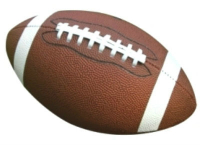

This page was added to help support the "Choose A Sport" page.
Basketball is a physical sport that people love to play on or off the court.

Flag Football is a fun and very competitive sport. much like playing tag with a ball but you play with flags instead.
Soccer is a running game so there would be lots of running exercises on the field. Golfing This can be a very frustrating sport, however, we must all learn to not let the frustrations go to our head. Instead learning to golf should be more relaxing and not boring as others may say about it.
Baseball is a family friendly sport just as long as you don’t get hit in the head with the ball.
Kickball is fun for everyone and always played as a co-ed sport.VolleyBall is a great sport and it can be very physical at times but don't be afraid of the ball coming towards you. This sport will be added at a later time. PickleBall is a great sport and it can be very competitive at times. This is a fairly new sport and might be a little complicated to understand, however, it will be determined to be added later in our sports list.